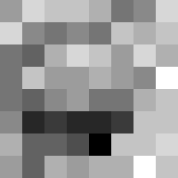

<div id="three_column_layout">
	<div class="left_col">
		<h1>Time</h1>
		<!-- <canvas id="time_data" width="80px" height="770px" style="display: none"></canvas> -->
		<svg id="time_data" xmlns="http://www.w3.org/2000/svg" version="1.1"
															viewBox="0 0 200 100" preserveAspectRatio="none">
			<defs>
			<linearGradient id="time_data_gradient" x1="0" x2="0.8" y1="0" y2="-0.3">
			<stop id="time_data_gradient_fg" offset="0%"/>
			<stop id="time_data_gradient_bg" offset="100%"/>
			</linearGradient>
			<linearGradient id="time_data_strong_gradient" x2="2.2" y2="-0.4" xlink:href="#time_data_gradient"/>
			</defs>
			<path id="time_data_line" d="M0 0 Q 80 3 100 100" stroke="url(#time_data_strong_gradient)" vector-effect="non-scaling-stroke"/>
			<path id="time_data_fill" d="M0 0 Q 80 3 100 100 L 200 100 L 200 0 Z" fill="url(#time_data_gradient)" vector-effect="non-scaling-stroke"/>
			<svg id="time_data_labels" x="100" width="100">
				<!-- Labels are inserted here by JS -->
			</svg>

		</svg>
	</div>
	<div id="center_column" class="center_col">
		<div id="thermal_image">
			<!--  -->
			<iframe src="/grideye/snapshot.html" style="overflow: hidden" seamless="seamless" scrolling="no" style="width: 100%"></iframe>
			<script>
				var iframe = $('#thermal_image iframe');
				iframe.on('load', function() {
					// There are silly CSS games that can be played to set the height
					// This is cleaner and sets sizing properly for inside the iframe
					iframe.css({'height':iframe.width()+'px'});
				});
			</script>
		</div>
		<div id="details">
			<span id="detail_heading">Currently:</span>
			<span id="temp">12&deg;</span>
			<span id="weight">300g</span>
		</div>
		<div id="recommended_section">
			<div ng-repeat="entry in ctrl.qcook_entries | orderBy: '-score' | limitTo: 2">
				<a class="btn btn-mw btn-round" href="qcook/{{entry.key}}" ng-style="{'border-color': ctrl.temperature_color(entry.temp_color)}">
					<span class="line1">{{entry.short_line1}}</span>
					<span class="line2">{{entry.short_line2}}</span>
				</a>
			</div>
		</div>
	</div>
	<div class="right_col">
		<h1>Temp</h1>
		<object id="temp_data" data="Thermometer_C.light.svg"></object>
	</div>
	<div id="extras" class="footer">
		<div class="btn-container">
			<a href="/settings/" id="menu_settings" class="btn btn-mw btn-round">
				<span class="glyphicon glyphicon-cog" aria-hidden="true"></span>
				<span class="sr-only">Settings</span>
			</a>
			<a href="/recipie/" id="menu_recipies" class="btn btn-mw btn-round">
				<span class="glyphicon glyphicon-list" aria-hidden="true"></span>
				<span class="sr-only">Recipies</span>
			</a>
			<a href="/qcook/" id="menu_qCooks" class="btn btn-mw btn-round">
				<span class="glyphicon glyphicon-cutlery" aria-hidden="true"></span>
				<span class="sr-only">Quick cooks</span>
			</a>
		</div>
	</div>
</div>

<script src="time_selection_bar.js"></script>
<script>
	"use strict";

	function svg_pt_to_temp(svg_pt) {
		var temp_data = document.getElementById('temp_data');
		var temp_svg = temp_data.contentDocument;

		// Event coordinates are relative to the outer html frame, not svg coordinates
		var svg_height = temp_svg.rootElement.viewBox.baseVal.height;
		var html_height = temp_data.offsetHeight;
		var svg_zero_pt = 1620;
		var svg_pt_per_div = 100;
		var html_zero_pt = html_height/svg_height*svg_zero_pt;
		var html_pt_per_div = html_height/svg_height*svg_pt_per_div;
		var event_divs = (html_zero_pt-svg_pt)/html_pt_per_div;

		var temp_zero = 10;
		var temp_per_div = 10;
		var calc_temp = Math.round(event_divs*temp_per_div+temp_zero);

		var min_temp = 20;
		var max_temp = 150;
		return calc_temp > max_temp ? max_temp : calc_temp < min_temp ? min_temp : calc_temp;
	}

	$('#temp_data').on('load', function(event) {
		var temp_svg = this.contentDocument;
		
		// Set the height of the temperature bar
		var rise = temp_svg.getElementById('rise');
		change_thermometer_height(400);

		// Handle click events
		var active_area = temp_svg.getElementById('outer_frame');
		active_area.addEventListener('click', function(event) {
			var temp = svg_pt_to_temp(event.pageY);
			console.log("TEMP CLICK", event.pageY, temp);
			window.location.href = '/temperature/' + temp;
		});


		// Give highlighted temperature on hover
		// Update value on new hover, not on waving mouse around
		// Libraries, such as hoverintent, come close but don't quite cut it

		var base_x, base_y, x, y; // Current mouse coords
		function hovering() {
			var t = svg_pt_to_temp(y);
			var h = (t-10)*10; // 100/division
			// TODO: Print current value
			console.log("HOVER-ANI", x, y, t, h);
			change_thermometer_height(h);
		}

		function track_mouse(event) {
			x = event.pageX;
			y = event.pageY;
		}

		function change_thermometer_height(height) { // 100px/10C
			var ani = rise.getElementsByTagName('animate')[0];
			var old_height = rise.getAttribute('height');
			ani.setAttribute('from', old_height);
			ani.setAttribute('to', height);
			ani.beginElement();
			rise.setAttribute('height', height);
		}


		var timer = 0;
		var in_hover = 0;

		active_area.addEventListener('mouseout', function(mo_event) {
			if(timer) {
				window.clearInterval(timer);
				timer = 0;
			}
			active_area.removeEventListener('mousemove', track_mouse);
		});

		active_area.addEventListener('mouseover', function(event) {
			base_x = event.pageX; base_y = event.pageY;

			// Can't just request current mouse position, have to track it :(
			track_mouse(event);
			this.addEventListener('mousemove', track_mouse);

			var pass = 0;
			timer = window.setInterval(function() {
				var dist = Math.sqrt(Math.pow(base_x - x, 2) + Math.pow(base_y - y, 2));
				// console.log("TO", dist, pass);
				if (dist > 10) {
					// Moved too far, wait until they stop...
					base_x = x; base_y = y;
					pass = 0;
					in_hover = 0;
				} else if (!in_hover) {
					// Seem to be close to prior point, make sure we are camped for the duration
					if (pass < 3) {
						pass = pass + 1;
					} else {
						// Have camped
						in_hover = 1;
						hovering();
					}
				}
			}, 100);

		});


	});

	if ($('#temp_data')[0].contentDocument) {
		// Already loaded
		console.log("Manual load #temp_data");
		$('#temp_data').trigger("load");
	}


</script>
